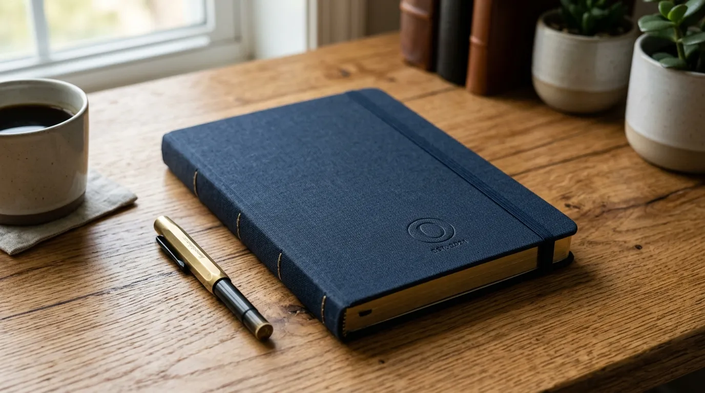

Koleksi Souvenir Kantor Unik Berkonsep Modern Office yang Banyak Dipilih Perusahaan
 Nazhima Nadine (Nad)
31 Juli 2026
5 Menit Baca
Nazhima Nadine (Nad)
31 Juli 2026
5 Menit Baca

Souvenir kantor unik berkonsep modern office adalah kategori merchandise yang mengusung desain simpel, warna netral, dan fungsi praktis, sehingga cocok digunakan di lingkungan kerja masa kini yang mengutamakan efisiensi dan estetika bersih. Gaya ini semakin diminati perusahaan modern karena mampu merepresentasikan citra profesional dan kekinian.
Souvenir kantor unik berkonsep modern office mengusung desain simpel, warna netral, dan fungsi praktis. Konsep ini menonjolkan kesederhanaan bentuk dan warna netral seperti hitam, putih, abu-abu, atau earth tone. Produk dalam kategori ini umumnya multifungsi dan mendukung produktivitas, dengan material yang tahan lama dan terlihat premium. Gaya ini cocok untuk perusahaan yang ingin membangun citra profesional dan kekinian, serta dapat digunakan lintas generasi karyawan karena desainnya yang netral dan timeless.
Apa yang Dimaksud dengan Souvenir Kantor Konsep Modern Office?
Souvenir kantor konsep modern office adalah kategori merchandise yang dirancang dengan pendekatan desain minimalis, garis bersih, dan palet warna netral seperti hitam, putih, abu-abu, atau earth tone, yang umumnya diasosiasikan dengan lingkungan kerja profesional masa kini.
Konsep ini muncul seiring perubahan gaya kerja yang semakin mengedepankan efisiensi ruang dan tampilan yang rapi, termasuk pada era kerja hybrid yang memadukan aktivitas di kantor dan di luar kantor. Barang-barang dengan konsep modern office biasanya dirancang agar mudah dibawa, ringkas, dan tetap terlihat elegan meskipun digunakan di berbagai situasi, baik saat rapat formal maupun aktivitas kerja santai.

Berbeda dengan souvenir bergaya tradisional yang cenderung ramai dengan ornamen, konsep modern office lebih menekankan pada kesederhanaan bentuk namun tetap memperhatikan detail kualitas material dan finishing produk. Pendekatan ini membuat barang terlihat lebih timeless dan tidak mudah terkesan ketinggalan zaman.
Apa Saja Contoh Produk Souvenir Kantor Modern Office?
Contoh produk souvenir kantor modern office meliputi organizer meja minimalis, notebook dengan sampul polos berkualitas, tumbler stainless dengan desain simpel, serta aksesoris digital seperti wireless charger dan stand laptop.
Organizer meja dengan desain rapi membantu penerima menjaga kerapian area kerja sekaligus menampilkan kesan profesional. Produk ini biasanya terbuat dari bahan seperti kayu, logam ringan, atau plastik berkualitas dengan warna netral yang mudah dipadukan dengan berbagai gaya interior kantor.
Notebook dengan sampul polos namun berkualitas premium juga menjadi favorit karena kesan elegan yang ditampilkannya. Berbeda dengan notebook bermotif ramai, sampul polos dengan detail logo yang presisi justru terlihat lebih mewah dan profesional.
Selain itu, aksesoris digital seperti wireless charger, stand laptop, dan kabel data multifungsi semakin banyak dipilih karena relevan dengan kebutuhan kerja modern yang bergantung pada perangkat elektronik. Barang-barang ini tidak hanya fungsional, tetapi juga mencerminkan citra perusahaan yang adaptif terhadap teknologi terkini.
Mengapa Konsep Modern Office Semakin Diminati Perusahaan?
Konsep modern office semakin diminati karena mampu merepresentasikan citra perusahaan yang profesional, adaptif, dan relevan dengan gaya kerja masa kini, tanpa terkesan berlebihan atau kuno.
Desain yang simpel dan netral membuat produk modern office lebih fleksibel digunakan oleh berbagai kalangan karyawan maupun klien, tanpa terbatas pada preferensi gaya tertentu. Hal ini penting karena souvenir yang terlalu spesifik pada satu gaya berisiko kurang diminati oleh sebagian penerima.
Selain itu, konsep ini juga dinilai lebih tahan lama secara visual. Barang dengan desain minimalis cenderung tidak cepat terlihat ketinggalan zaman dibandingkan barang dengan motif atau warna yang terlalu mencolok, sehingga nilai penggunaannya bertahan lebih lama.
Faktor lain yang mendorong popularitas konsep ini adalah kesesuaiannya dengan budaya kerja fleksibel. Banyak perusahaan saat ini menerapkan sistem kerja hybrid, sehingga barang yang ringkas, mudah dibawa, dan tetap terlihat rapi di berbagai situasi menjadi pilihan yang lebih praktis dibandingkan barang bervolume besar atau berdesain rumit.
Bagaimana Cara Memilih Produk Modern Office yang Sesuai dengan Brand?
Cara memilih produk modern office yang sesuai dengan brand dilakukan dengan menyelaraskan warna produk dengan identitas visual perusahaan, memilih material yang mencerminkan kualitas brand, serta memastikan fungsi barang relevan dengan aktivitas kerja penerima.
1. Penyelarasan Warna
Penyelarasan warna menjadi langkah penting agar souvenir terlihat konsisten dengan elemen visual lain milik perusahaan, seperti logo, website, atau materi pemasaran. Ketidaksesuaian warna dapat membuat souvenir terkesan terpisah dari identitas brand secara keseluruhan.
2. Pemilihan Material
Material produk juga perlu disesuaikan dengan citra yang ingin ditampilkan. Perusahaan yang ingin menonjolkan kesan premium biasanya memilih material seperti logam, kulit sintetis berkualitas, atau kayu solid, sementara perusahaan dengan pendekatan lebih kasual dapat memilih material seperti kanvas atau plastik daur ulang.
3. Relevansi Fungsi
Terakhir, memastikan fungsi barang benar-benar relevan dengan kebutuhan kerja penerima akan meningkatkan intensitas penggunaan souvenir tersebut, sehingga eksposur identitas brand juga menjadi lebih optimal dalam jangka panjang.
Butuh Souvenir Kantor Bergaya Modern Office?
Konsultasikan kebutuhan souvenir kantor unik bergaya modern office Anda dengan tim kami untuk mendapatkan rekomendasi produk terbaik.
Konsultasi SekarangKesimpulan
Souvenir kantor unik dengan konsep modern office menawarkan keseimbangan antara estetika minimalis dan fungsi praktis yang relevan dengan gaya kerja masa kini. Perusahaan yang memilih kategori ini umumnya ingin menampilkan citra profesional, adaptif, dan tidak lekang oleh tren, sekaligus memastikan barang yang diberikan benar-benar digunakan secara berkelanjutan oleh penerimanya. Dengan pemilihan produk yang tepat, souvenir modern office dapat menjadi investasi branding yang efektif dan tahan lama.
FAQ Seputar Souvenir Kantor Konsep Modern Office